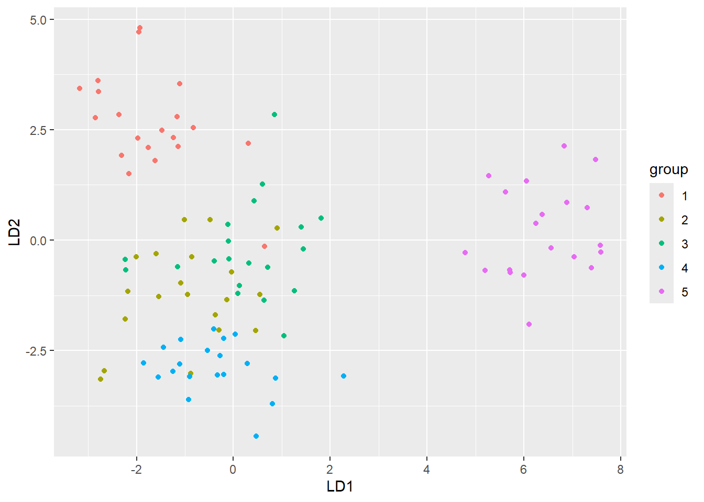
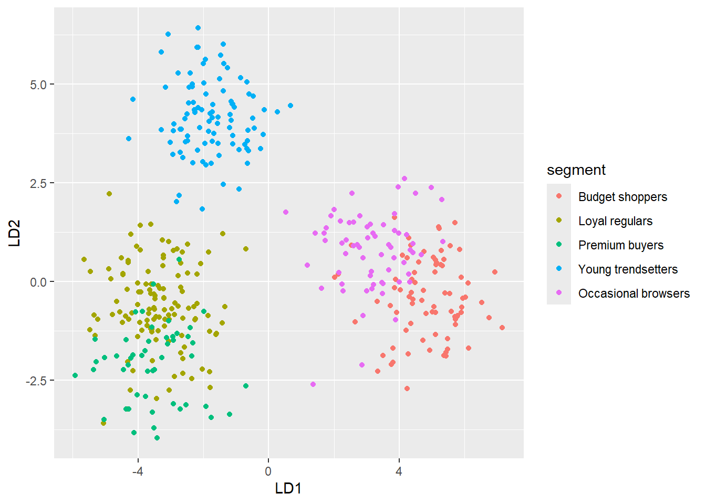
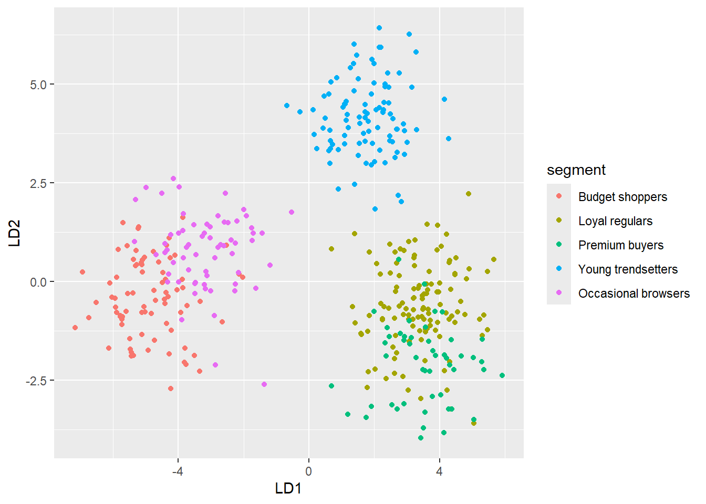

library(knitr)
library(ggplot2)
library(dplyr)
Attaching package: 'dplyr'The following objects are masked from 'package:stats':
filter, lagThe following objects are masked from 'package:base':
intersect, setdiff, setequal, unionlibrary(knitr)
library(ggplot2)
library(dplyr)
Attaching package: 'dplyr'The following objects are masked from 'package:stats':
filter, lagThe following objects are masked from 'package:base':
intersect, setdiff, setequal, unionset.seed(2025)
library(ggplot2); library(cowplot)
# Simulate five groups, p = 10
n <- 20 # observations per group
p <- 10 # number of variables
# Common covariance: diagonal matrix with variance 3 on X1, and 1 on X2–X10
Sigma <- diag(c(3, rep(1, p - 1)))
# Define group means so that they differ along the first five dimensions
means <- lapply(1:5, function(i) {
mu <- rep(0, p)
mu[i] <- 3 * (i - 3) # shifts: −6, −3, 0, 3, 6 on dimension i
mu
})
# Simulate the data
dat <- do.call(rbind, lapply(1:5, function(i) {
data.frame(
group = factor(i),
MASS::mvrnorm(n, mu = means[[i]], Sigma = Sigma)
)
}))
# Name the columns X1…X10
colnames(dat)[-1] <- paste0("X", seq_len(p))
# Peek at the first few rows
head(dat) group X1 X2 X3 X4 X5 X6
1 1 -4.924818 0.5402712 0.27979527 -0.6843955 -0.64065820 0.69042592
2 1 -5.938267 0.8854442 1.90725448 -1.9158754 -0.86385288 -0.25473083
3 1 -4.660857 1.4425273 -0.09792505 0.9352677 -0.42878593 1.04235775
4 1 -3.795984 0.6184340 -0.09607699 0.6347353 -1.38938348 0.23701117
5 1 -5.357452 -1.5176350 -0.87204546 -0.3203387 0.25089707 -1.32723723
6 1 -6.282072 -1.0704582 -1.70739760 -0.6056149 -0.04501612 -0.07638499
X7 X8 X9 X10
1 -1.1208930648 0.5945689 1.2731270 -0.2445707
2 1.4700430674 0.6391008 1.4622685 0.7337854
3 0.2052566210 0.4794219 -0.6110828 2.8527814
4 -1.0612418880 1.3730624 -0.3605532 0.6715253
5 -0.0009748315 -1.1476841 -1.5291518 -0.1158493
6 -0.0244471704 -2.4506985 1.1332638 -1.3013520dat_original = dat# define vars
X = as.matrix(dat[,-1])
g = length(unique(dat$group))
n_i = table(dat$group)
W = matrix(0, ncol(X), ncol(X))
B = matrix(0, ncol(X), ncol(X))
# group the data to fidn group means
overall_mean = colMeans(X)
group_mean = dat %>%
group_by(group) %>%
summarise(across(everything(), mean), .groups = 'drop') %>%
select(-group) %>%
as.matrix()
# populate B and W
for(i in 1:g){
diff = group_mean[i,] - overall_mean
B = B + n_i[i] * (diff %*% t(diff))
Xi = X[dat$group == i,]
W = W + cov(Xi) * (nrow(Xi) - 1)
}Eigen decomp
# eigen decomp
eig_mat = eigen(solve(W) %*% B)$vectors %>% Re()
S_pooled = W / (sum(n_i) - g)
sd = diag(sqrt(t(eig_mat) %*% S_pooled %*% eig_mat))Warning in sqrt(t(eig_mat) %*% S_pooled %*% eig_mat): NaNs producedeig_mat = (eig_mat %*% diag(1/sd))[,1:2] # which LD loadings would you like
df = data.frame(
LD1 = eig_mat[,1],
LD2 = eig_mat[,2]
)
kable(df, digits = 3)| LD1 | LD2 |
|---|---|
| 0.241 | -0.466 |
| 0.248 | 0.344 |
| -0.133 | 0.013 |
| -0.168 | -0.767 |
| 1.125 | 0.088 |
| 0.135 | 0.046 |
| -0.181 | 0.135 |
| -0.017 | 0.097 |
| 0.233 | -0.041 |
| 0.215 | 0.169 |
Scores and plot
dat$score1 = as.numeric(X %*% eig_mat[,1])
dat$score2 = as.numeric(X %*% eig_mat[,2])
ggplot(dat, aes(x = score1, y = score2, colour = group)) +
geom_point() +
labs(x = "LD1", y = "LD2")
Discuss which discriminate is drivign what seperation then go to loadings and discuss which variables drive these discriminates.
library(MASS)
Attaching package: 'MASS'The following object is masked from 'package:dplyr':
select#NB to do original data here!
lda_loadings = lda(group ~ ., data = dat_original)
kable(data.frame(ld1 = lda_loadings$scaling[,1], ld2 = lda_loadings$scaling[,2]), digits = 3)| ld1 | ld2 | |
|---|---|---|
| X1 | 0.241 | -0.466 |
| X2 | 0.248 | 0.344 |
| X3 | -0.133 | 0.013 |
| X4 | -0.168 | -0.767 |
| X5 | 1.125 | 0.088 |
| X6 | 0.135 | 0.046 |
| X7 | -0.181 | 0.135 |
| X8 | -0.017 | 0.097 |
| X9 | 0.233 | -0.041 |
| X10 | 0.215 | 0.169 |
X = as.matrix(dat_original[,-1])
dat$score1_lda = as.numeric(X %*% lda_loadings$scaling[,1])
dat$score2_lda = as.numeric(X %*% lda_loadings$scaling[,2])
ggplot(dat, aes(x = score1_lda, y = score2_lda, colour = group)) +
geom_point() +
labs(x = "LD1", y = "LD2")
library(MASS)
library(dplyr)
library(knitr)
set.seed(42)
vars <- c("avg_spend","visit_freq","discount_use","loyalty_score",
"online_ratio","basket_size","return_rate","brand_pref",
"session_len","age_score")
segments <- c("Budget shoppers","Loyal regulars","Premium buyers",
"Young trendsetters","Occasional browsers")
# Group sizes (unequal)
ns <- c(80, 120, 50, 95, 65)
# Group means (10-dimensional)
mu1 <- c(-2.5, -1.5, 2.0, -1.0, -0.5, -1.5, 0.5, -1.5, -1.0, 1.5) # Budget shoppers
mu2 <- c(0.5, 2.5, 0.0, 2.5, -0.5, 0.5, -0.5, 0.5, 1.0, -0.5) # Loyal regulars
mu3 <- c(3.0, -1.0, -1.5, 1.0, -1.0, 2.5, -1.5, 2.0, -0.5, -1.5) # Premium buyers
mu4 <- c(1.0, 1.0, 0.5, -0.5, 2.5, 0.0, 0.5, -1.0, 2.5, -2.0) # Young trendsetters
mu5 <- c(-0.5, -1.5, 0.5, -1.5, 1.0, -1.0, 1.0, -0.5, -1.5, 0.5) # Occasional browsers
means <- list(mu1, mu2, mu3, mu4, mu5)
# Common covariance
Sigma <- diag(10)
dat <- do.call(rbind, lapply(seq_along(segments), function(i){
data.frame(
segment = factor(segments[i], levels = segments),
as.data.frame(mvrnorm(ns[i], mu = means[[i]], Sigma = Sigma))
)
}))
colnames(dat)[-1] <- vars
# Quick checks
table(dat$segment)
Budget shoppers Loyal regulars Premium buyers Young trendsetters
80 120 50 95
Occasional browsers
65 head(dat) segment avg_spend visit_freq discount_use loyalty_score online_ratio
1 Budget shoppers -2.171360 -0.6970673 2.587716257 -1.2256037 0.8349126
2 Budget shoppers -1.033489 -2.0734769 2.089642296 -2.9249504 -1.3692718
3 Budget shoppers -2.856010 -3.4281252 2.967261657 -2.4392293 -0.4445130
4 Budget shoppers -2.238532 -0.8356092 2.078812353 -2.4696578 -0.4509331
5 Budget shoppers -2.166671 -3.1025402 0.431300164 -0.2381366 -1.0783557
6 Budget shoppers -1.077807 -2.8546003 -0.007823184 -1.2436150 -1.4987387
basket_size return_rate brand_pref session_len age_score
1 -1.984595 -0.2292173 -1.67552587 0.5127070 2.8709584
2 -1.310871 1.4980689 -2.57178238 -0.7420786 0.9353018
3 -1.448994 1.7584817 -1.33679312 -0.9115598 1.8631284
4 -1.500241 1.7488637 -1.86273842 -1.1208965 2.1328626
5 0.309382 -0.8806370 -0.90998645 -2.1943289 1.9042683
6 -2.325328 2.5499607 -0.06757807 -0.3880031 1.3938755# LDA from first principles
X = as.matrix(dat[,-1])
dat$segment = as.factor(dat$segment)
g = length(unique(dat$segment))
n_i = table(dat$segment)
W = matrix(0, ncol(X), ncol(X))
B = matrix(0, ncol(X), ncol(X))
overall_means = colMeans(X)
group_means = dat %>%
group_by(segment) %>%
summarise(across(everything(), mean), .groups = "drop") %>%
dplyr::select(-segment) %>%
as.matrix()
for(i in 1:g){
diff = group_means[i,] - overall_means
B = B + n_i[i] * (diff %*% t(diff))
Xi = X[as.integer(dat$segment) == i,]
W = W + cov(Xi) * (nrow(Xi) - 1)
}
eig_mat = eigen(solve(W) %*% B)
vec = eig_mat$vectors %>% Re()
Spooled = W / (sum(n_i) - g)
sd = diag(sqrt(t(vec) %*% Spooled %*% vec))Warning in sqrt(t(vec) %*% Spooled %*% vec): NaNs producedstandardised = (vec %*% diag(1/sd))[,1:2]
kable(data.frame(Loading1 = standardised[,1], Loading2 = standardised[,2]))| Loading1 | Loading2 |
|---|---|
| -0.4562998 | 0.1024787 |
| -0.5360027 | 0.1220625 |
| 0.2575063 | 0.0681853 |
| -0.4011863 | -0.3596517 |
| -0.0430668 | 0.5948798 |
| -0.2666309 | -0.2324492 |
| 0.1922288 | 0.2190921 |
| -0.2944708 | -0.2961591 |
| -0.3039933 | 0.4685363 |
| 0.3398110 | -0.2976834 |
dat$LD1 = as.numeric(X %*% standardised[,1])
dat$LD2 = as.numeric(X %*% standardised[,2])
ggplot(dat, aes(x = LD1, y = LD2, colour = segment)) +
geom_point() +
labs(x = "LD1", y = "LD2")
dat_original = dat[-c(12,13)]
X_org = as.matrix(dat_original[,-1])
library(MASS)
ld_temp = lda(segment ~ ., data = dat_original)
kable(data.frame(Loading1 = ld_temp$scaling[,1], Loading2 = ld_temp$scaling[,2]))| Loading1 | Loading2 | |
|---|---|---|
| avg_spend | 0.4562998 | 0.1024787 |
| visit_freq | 0.5360027 | 0.1220625 |
| discount_use | -0.2575063 | 0.0681853 |
| loyalty_score | 0.4011863 | -0.3596517 |
| online_ratio | 0.0430668 | 0.5948798 |
| basket_size | 0.2666309 | -0.2324492 |
| return_rate | -0.1922288 | 0.2190921 |
| brand_pref | 0.2944708 | -0.2961591 |
| session_len | 0.3039933 | 0.4685363 |
| age_score | -0.3398110 | -0.2976834 |
dat_original$LD1 = X_org %*% ld_temp$scaling[,1]
dat_original$LD2 = X_org %*% ld_temp$scaling[,2]
ggplot(dat_original, aes(x = LD1, y = LD2, colour = segment)) +
geom_point()
LD1 seperates BS, LR, PR fromYT and OB, while LD2 seperates YT from all the other variables. We see overlap between BS and OB as well as overlap for LR and PB. This could be owing to the fact that they are generally just diffciuly groups to seperate as they have lots of overlap. Or it coudl be because we are only using 2 of the LD principle components and thus could be leaving out so variation that would eb explained by the additional loaidngs as they give more dimensions to discover. We can see from examining the laodings that LD1 is driven by avg spend, loyal score and visit freq. L2 is driven by onine_ratio and session length